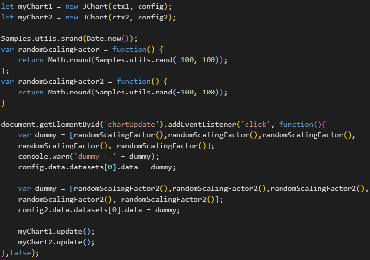
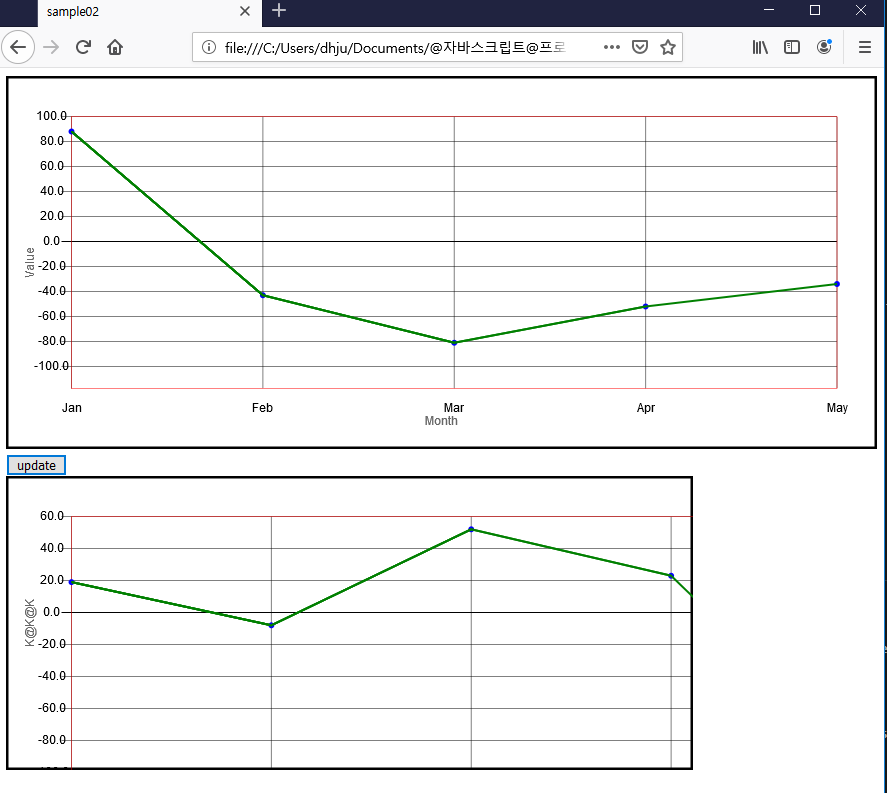

Usage - config
#
config 설정
단일 차트와 같은 방식으로 진행하며 canvas, ctx, JChart를 따로 초기화 및 생성하여야 한다.

canvas, ctx, JChart를 각각 초기화 하고 config 설정을 다르게 하여 표출한 모습(아래)

Config
두개의 random함수로 각기 다른
data
,
xLabel
,
yLabel
,
responsive
값으로 설정